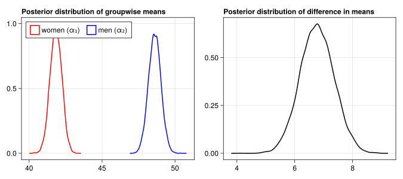
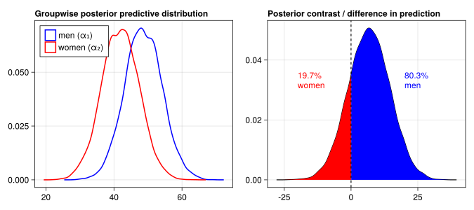

using Distributions
using CairoMakie
using DataFramesStatistical Rethinking
Week 2: Categorical Data
Linear Regression with Categorical Inputs
After having considered the case of weight as a function of height in the last lecture, we now move to building a model for categorical predictors. For the considered example of modeling weights, we start by investigating the total differences between men and women before building a multivariate model which stratifies the relationship between height and weight by sex.
Simulate the Data Generating Process
As before, our first step is to build a simulation model of the data generating process.
function simulate_data(S, b, a)
H = ifelse(S == 1, 150, 160) + rand(Normal(0, 5))
W = a[S] + b[S]*H + rand(Normal(0, 5))
(;S, H, W)
end;This function accepts an index variable for sex (1 for women, 2 for men) and containers with coefficients and intercepts for men and women, respectively. It then returns a NamedTuple with the input sex, the simulated height and the simulated weight.
β = (0.5, 0.6)
α = (0, 0)
simulate_data(1, β, α)(S = 1, H = 152.22089105281358, W = 75.56536457520065)Using an array comprehension, we can simulate a population of randomly drawn sexes or populations for men and women seperatley:
dat = [simulate_data(S, β, α) for S in rand([1,2], 100)] |> DataFrame
men = [simulate_data(2, β, α) for _ in 1:100] |> DataFrame
women = [simulate_data(1, β, α) for _ in 1:100] |> DataFrame;first(dat, 4)4×3 DataFrame
| Row | S | H | W |
|---|---|---|---|
| Int64 | Float64 | Float64 | |
| 1 | 1 | 152.16 | 82.2914 |
| 2 | 1 | 144.364 | 66.0889 |
| 3 | 2 | 158.905 | 102.192 |
| 4 | 1 | 153.623 | 77.6563 |
Given 100 pairs of simulated men and women, we can compute the weight contrast in our population by taking the mean of the pairwise differences:
mean(men.W .- women.W)21.10868784424859With this ground truth in place, we can now move towards creating an estimator which we can validate using the simulations.
Specify Model
Quadratic approximation
using Turing
using Optim
using StatsBase: vcov
using LinearAlgebra
using StructArrays
function quadratic_approximation(model)
est = optimize(model, MAP())
cov = Symmetric(vcov(est).array)
MvNormal(est.values.array, cov)
end
function posterior_samples(fit, names; S=10000)
r = rand(fit, S)
r = map(eachcol(r)) do s
NamedTuple{names}(s)
end
StructArray(r)
end;For the case of a direct comparison between women and men, a simple model with only two intercepts, one for women and one for men, does the job:
\[ \begin{align} \textrm{weight}_i &\sim \textrm{Normal}(\alpha_i, \sigma) \\ \alpha_{S[i]} &\sim \textrm{Normal}(60, 10) \text{ for } \\ \sigma &\sim \textrm{Exponential(10)} \end{align} \]
Here, \(S[i] = 1\) if observation \(i\) is a woman and \(S[i] = 2\) if observation \(i\) is a man. The corresponding Turing.jl model makes use of filldist(dist, k) in the prior specification for \(\alpha\), which creates a k-length array of distributions where each element follows distribution dist. The length 2 array \(\alpha\) can then be indexed with α[sexes[i]] in the likelihood computation t pick either the first or second entry for women and men, respectively.
@model function model_compare_sexes(weights, sexes)
α ~ filldist(Normal(60, 10), 2)
σ ~ Exponential(10)
for i in eachindex(weights)
weights[i] ~ Normal(α[sexes[i]], σ)
end
end;Having defined the model structure, we can instantiate it on the simulated data and fit it with the quadratic_approximation() function defined in the last session:
model = model_compare_sexes(dat.W, dat.S)
fit = quadratic_approximation(model)FullNormal(
dim: 3
μ: [74.75409568501884, 95.62312475728567, 5.11886558553671]
Σ: [0.4829944928880252 0.0002857838342410104 -0.003625155090255838; 0.0002857838342410104 0.5672087366355104 -0.01026638062291815; -0.003625155090255838 -0.01026638062291815 0.13022857668810334]
)As before, the result is a multivariate normal distribution approximating the posterior distribution of the parameters which can be directly examined or sampled for posterior inference. In this case, the first two entries of this distribution’s parameter \(\mu\) represent \(\alpha_1\) and \(\alpha_2\). The difference of about 20 between these is in line with the contrast computed earlier, so the model seems to adequately capture this part of the structure of our population.
Analyse Real Data
Having tested the model on simulated data be now move on to the real data. As before, we download the data into a DataFrame and filter out the adults.
Download function
using HTTP, CSV
function download_data(dataset)
repo = "https://raw.githubusercontent.com/rmcelreath/rethinking/master/data/"
link = repo * dataset
file = HTTP.download(link; update_period=Inf)
CSV.read(file, DataFrame)
end;df = download_data("Howell1.csv");
df = subset(df, :age => ByRow(>=(18)));┌ Warning: Reading one byte at a time from HTTP.Stream is inefficient.
│ Use: io = BufferedInputStream(http::HTTP.Stream) instead.
│ See: https://github.com/BioJulia/BufferedStreams.jl
└ @ HTTP.Streams C:\Users\Jakob\.julia\packages\HTTP\z8l0i\src\Streams.jl:240first(df, 4)4×4 DataFrame
| Row | height | weight | age | male |
|---|---|---|---|---|
| Float64 | Float64 | Float64 | Int64 | |
| 1 | 151.765 | 47.8256 | 63.0 | 1 |
| 2 | 139.7 | 36.4858 | 63.0 | 0 |
| 3 | 136.525 | 31.8648 | 65.0 | 0 |
| 4 | 156.845 | 53.0419 | 41.0 | 1 |
Without further ado, we instantiate and fit the model and draw some samples from the posterior distribution for computing posterior quantities of interest:
model = model_compare_sexes(df.weight, df.male .+ 1)
fit = quadratic_approximation(model)
samples = posterior_samples(fit, (:α1, :α2, :σ));One pair of such quantities of interest is the groupwise mean weights for men and women and the corresponding difference in means. For each of these, we can plot the posterior distribution computed from the posterior samples generated above:
Plotting function
function plot_posterior_means(samples)
fig = Figure(resolution = (900, 300))
ax1 = Axis(fig[1,1];
title = "Posterior distribution of groupwise means",
titlealign=:left)
density!(ax1, samples.α1; color=(:red, 0.0), strokecolor=:red, strokewidth=2, label="women (α₁)")
density!(ax1, samples.α2; color=(:blue, 0.0), strokecolor=:blue, strokewidth=2, label="men (α₂)")
axislegend(ax1; nbanks=2, position=:lt)
diff = [s.α2 - s.α1 for s in samples]
ax2 = Axis(fig[1,2]; title = "Posterior distribution of difference in means", titlealign=:left)
density!(ax2, diff; color=(:red, 0.0), strokecolor=:black, strokewidth=2)
fig
end;plot_posterior_means(samples)
While the difference in means indicates that on average, men are about 7 kilos heavier than women, this does not take the residual standard deviation \(\sigma\) into account; despite the average difference, there can be women heavier than men. A more complete representation of the modeled population is then to simulate men and women from a Normal distribution, using the posterior draws for the \(\alpha\)’s and \(\sigma\):
Plotting function
function plot_posterior_prediction(samples)
fig = Figure(resolution=(900, 300))
ax1 = Axis(fig[1,1]; title = "Groupwise posterior predictive distribution", titlealign=:left)
women = [rand(Normal(s.α1, s.σ)) for s in samples]
men = [rand(Normal(s.α2, s.σ)) for s in samples]
diff = men .- women
density!(ax1, men; color=(:blue, 0.0), strokecolor=:blue, strokewidth=2, label="men (α₁)")
density!(ax1, women; color=(:red, 0.0), strokecolor=:red, strokewidth=2, label="women (α₂)")
axislegend(ax1; position=:lt)
ax2 = Axis(fig[1,2]; title = "Posterior contrast / difference in prediction", titlealign=:left)
k = Makie.KernelDensity.kde(diff)
i = findfirst(>(0), k.x)
p = round(sum(first(k.density, i) / sum(k.density)) * 100; digits=1)
lines!(ax2, k; color=:black)
band!(k.x[1:i], zeros(i), k.density[1:i]; color=:red)
band!(k.x[i+1:end], zeros(length(k.x) - i), k.density[i+1:end]; color=:blue)
vlines!(ax2, 0; color=:black, linestyle=:dash)
text!(ax2, -20, 0.03; text="$p% \nwomen", color=:red)
text!(ax2, 20, 0.03; text="$(100-p)% \nmen", color=:blue)
fig
end;plot_posterior_prediction(samples)
The posterior contrast shows that, if we were to draw 100 pairs of men and women from the population, we would expect that in about 80% of the comparisons, the man would be heavier than the woman.